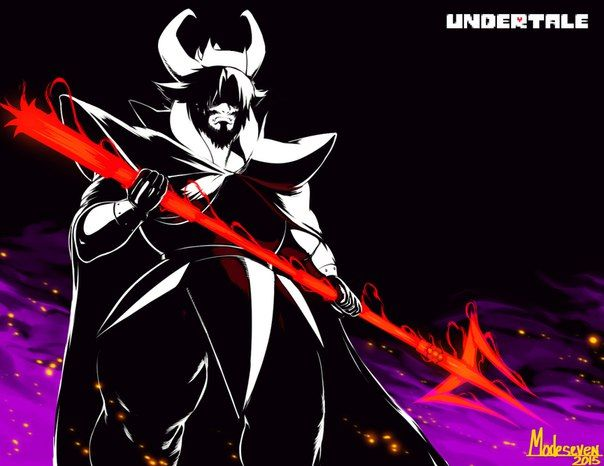

La desgracia de un reySu decaida ocurrió siendo un joven rey de monstruos, los monstruos y los humanos convivian juntos en la superficie, los humanos y los monstruos no tenian muchos problemas en convivir pero siempre existio una idea general, que una raza se levantara contra otra, aunque los humanos eran naturalmente mas resistentes y fuertes que los humanos.
Los monstruos al no tener materia fisica conformandolos y solo siendo producto de su alma los hacia muchos mas debiles y fragiles comparados a la forma material y fisica de cualquier ser humano, pero esto les daba la capacidad de hacer magia casi naturalmente y tener ciertas habilidades especiales a los monstruos.
Los humanos aunque fueran mas fuertes tambien notaban el desarrollo en la fuerza de los monstruos por lo que decidieron no esperar ser atacados y atacar primero, fue una guerra que los mosntruos no esperaron y duro varios dias hasta que los monstruos finalmente fueron acorralados y obligados a adentrarse en una montaña con un subterraneo en donde fueron sellados por la magia de magos poderozos que uniendo fuerzas crearon una barrera impenetrable.
Los monstruos se adapataron a vivir en el subsuelo al cual llamaron "underground" como su hogar permanente
Asgore Dreemurr

Asgore cuenta con dos guardianos principales pertenecientes a la guardia real, sans como centinela y undyne como su guardia real, sans es un esqueleto calmado y que no se toma muy en serio su papel chocando directamente con undyne quien siempre está alerta por si hay algún peligro